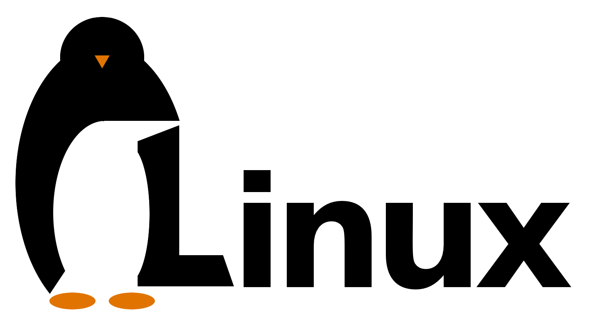
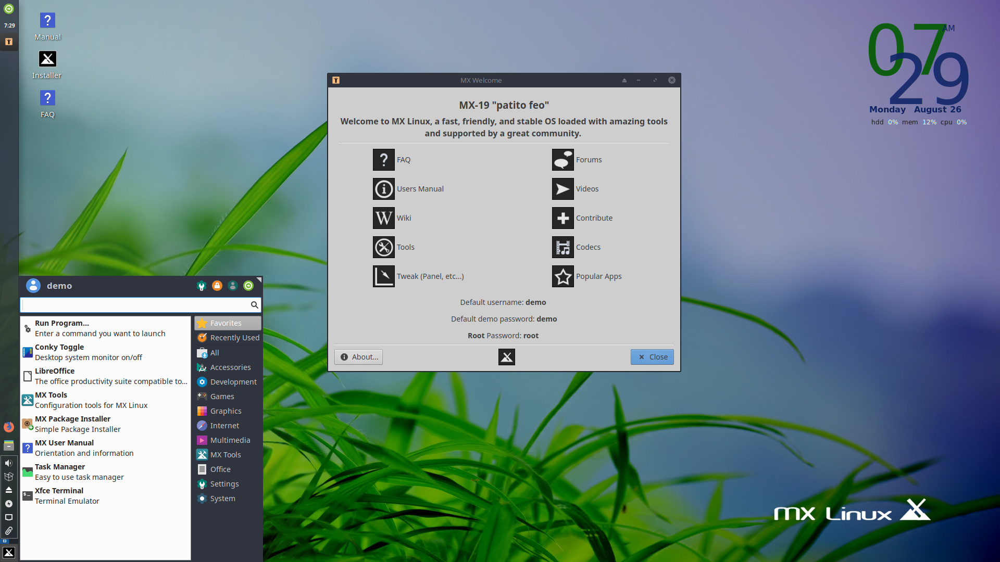

|  |
| ::MENU:: |
| Strona główna |
| Początkujący |
| Zaawansowany |
| Profesjonalny |
Dystrybucje dla początkujących użytkownikówUbuntuUbuntu Linux jest gotowym systemem biurkowym. Autorzy dystrybucji wybrali z olbrzymich zasobów Debiana ich zdaniem najlepsze i najstabilniejsze oprogramowanie niezbędne do pełnego wykorzystania komputera. Pozwala to na uruchomienie i efektywne wykorzystanie systemu bezpośrednio po instalacji. Jednocześnie, poprzez pozostawienie dostępu do pakietów debianowych, każdy może dostosować system do własnych potrzeb i upodobań Ubuntu to stare afrykańskie słowo oznaczające „człowieczeństwo dla wszystkich”. Kierując się tym przesłaniem firma Canonical Ltd. opracowała i udostępniła opartą na Debianie dystrybucję Linuksa Ubuntu. 
MX linuxMX Linux to szybki, wydajny i bardzo stabilny system operacyjny wyposażony w niesamowicie przydatne narzędzia i wspierany przez wspaniałą społeczność. Bez problemów działa na nowych, a także na starszych (starych) komputerach. Są dostępne dwie wersje: 64-bitowa i 32-bitowa. MX Linux optymalnie i rozsądnie wykorzystuje zasoby komputera. Sam rozpoznaje różne urządzenia (drukarki, skanery, bezprzewodowe karty sieciowe WiFi itp.). Zazwyczaj wystarczy podpiąć je tylko do komputera i od razu można z nich korzystać. Pop!_OSPop!_ OS 19.04 bazuje na Ubuntu Disco Dingo. ... Tak jak nazwa systemu wskazuje, nowe wydanie jest zbudowane na bazie Ubuntu 19.04 Disco Dingo, a co za tym idzie – na sam start mamy tutaj Linux Kernel 5.0 oraz środowisko graficzne GNOME w wersji 3.32. ZorinOSZorin OS – dystrybucja Linuksa, oparta na Ubuntu zaprojektowana dla nowicjuszy Linuxa. Ma interfejs graficzny użytkownika w stylu Windows i wiele podobnych programów. Zorin OS jest również wyposażony w aplikację (Wine), która pozwala użytkownikom uruchamiać wiele programów z systemu Windows. Ostatecznym celem producentów tej dystrybucji jest zapewnienie alternatywy dla systemu Windows i umożliwienie użytkownikom tego systemu korzystania ze wszystkich funkcji w Linuksie bez komplikacji. Linux Mint
Linux Mint – dystrybucja systemu GNU/Linux oparta na Ubuntu oraz Debianie, skierowana do początkujących użytkowników. Dystrybucja kładzie nacisk na prostotę użytkowania, przydatne aplikacje i pełne ich wsparcie zaraz po instalacji. Twórcy zadbali o dodanie wielu graficznych nakładek. Na standardowej płycie instalacyjnej znajduje się większość popularnego własnościowego oprogramowania – wtyczka Adobe Flash Player, Java oraz duży zbiór kodeków audio i wideo pozwalających odtworzyć wszystkie popularne pliki muzyczne i filmowe, nawet korzystając z wersji Live CD (w Ubuntu takie oprogramowanie trzeba zainstalować samodzielnie). Źródła: Wikiepdia |
| Cyryl Kałuża | © Wszelkie prawa zastrzeżone | cyrylmarian.kaluza@hotmail.com |